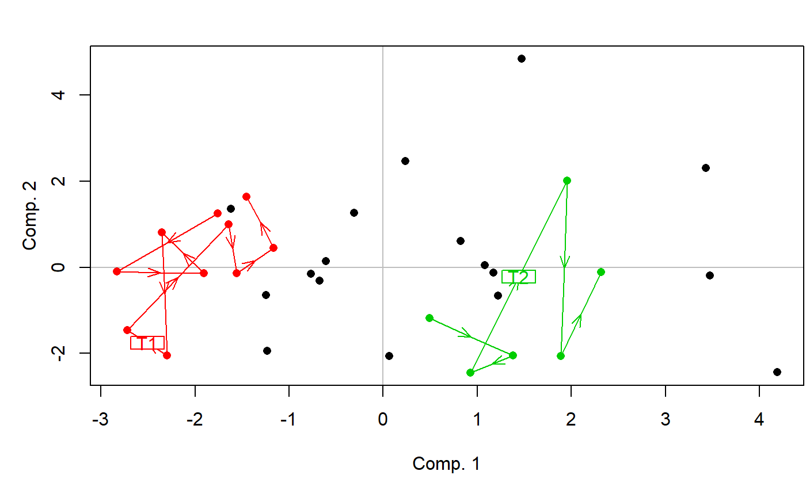

MVA.trajplot.RdDisplays a trajectory plot (i.e. a score plot with trajectories linking defined points) of a multivariate analysis.
MVA.trajplot(x, xax = 1, yax = 2, trajects, trajlab = NULL, scaling = 2, set = c(12, 1, 2), space = 1, xlab = NULL, ylab = NULL, main = NULL, pch = 16, cex = 1, trajlab.cex = 1, col = 1, lwd = 1, lty = 1, points = TRUE, allpoints = TRUE, arrows = TRUE, labels = NULL, main.pos = c("bottomleft", "topleft", "bottomright", "topright"), main.cex = 1.3, legend = FALSE, legend.pos = c("topleft", "topright", "bottomleft", "bottomright"), legend.title = NULL, legend.lab = NULL, legend.cex = 1, drawextaxes = TRUE, drawintaxes = TRUE, xlim = NULL, ylim = NULL)
| x | a multivariate analysis (see Details). |
|---|---|
| xax | the horizontal axis. |
| yax | the vertical axis. Cannot be |
| trajects | vector or list of vectors identifying trajectories. Each vector should give the number of the individuals to be linked, ordered from the first to the last one. |
| trajlab | optional traject labels. |
| scaling | type of scaling. Only available with some analyses performed with the |
| set | scores to be displayed, when several sets are available (see Details of |
| space | scores to be displayed, when several spaces are available (see Details of |
| xlab | legend of the horizontal axis. If |
| ylab | legend of the vertical axis. If |
| main | optional title of the graph. |
| pch | symbols used for points. Can be a vector giving one value per trajectory (and a last one for non-linked points if |
| cex | size of the labels. Can be a vector giving one value per trajectory (and a last one for non-linked points if |
| trajlab.cex | size of trajectory labels. Can be a vector giving one value per trajectory. |
| col | color(s) used for arrows and labels. If |
| lwd | width of trajectory segments. Can be a vector giving one value per trajectory. |
| lty | type of trajectory segments. Can be a vector giving one value per trajectory. |
| points | logical indicating if points should be displayed. If |
| allpoints | logical indicating if points which do not belong to any trajectory should be drawn. |
| arrows | logical indicating if trajectories should be oriented with arrows. |
| labels | names of the individuals. If |
| main.pos | position of the title, if |
| main.cex | size of the title, if |
| legend | logical indicating if a legend should be added to the graph. |
| legend.pos | position of the legend, if |
| legend.title | optional title of the legend, if |
| legend.lab | legend labels, if |
| legend.cex | size of legend labels, if |
| drawextaxes | logical indicating if external axes should be drawn.. |
| drawintaxes | logical indicating if internal axes should be drawn. |
| xlim | limits of the horizontal axis. If |
| ylim | limits of the vertical axis. If |
This function should not be use directly. Prefer the general MVA.plot, to which all arguments can be passed.
All multivariate analyses supported by MVA.scoreplot can be used for a paired plot.\
require(ade4) data(olympic) PCA <- dudi.pca(olympic$tab,scannf=FALSE) MVA.plot(PCA,"traject",trajects=list(1:10,25:30),col=c(2,3,1),trajlab=c("T1","T2"))